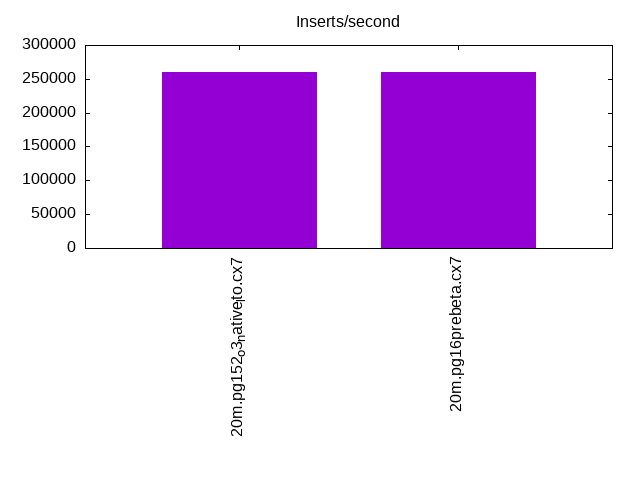
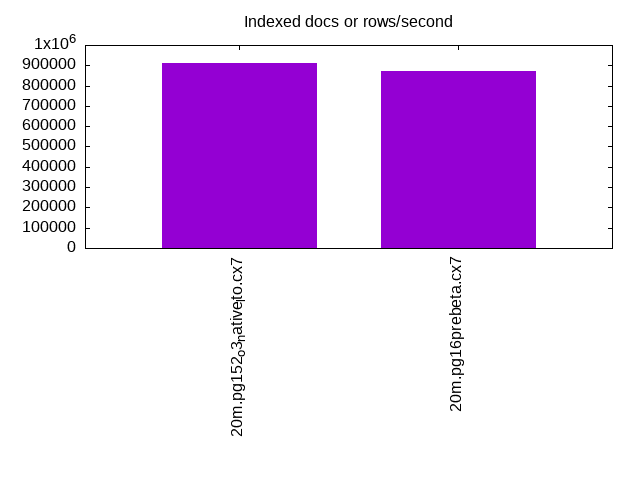
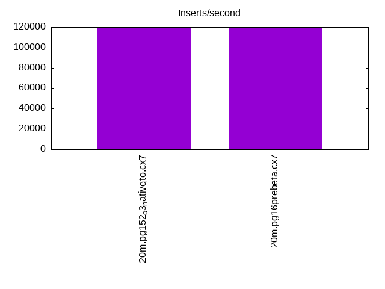
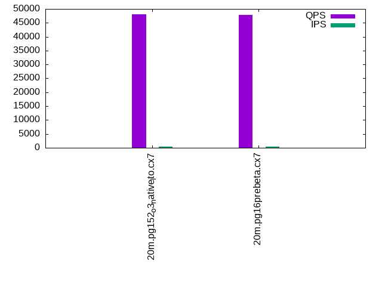
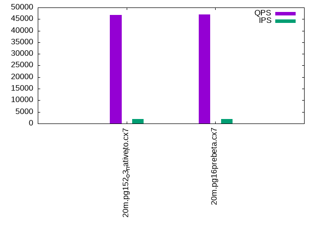
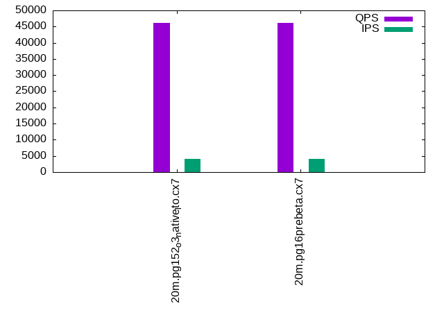

This is a report for the insert benchmark with 20M docs and 4 client(s). It is generated by scripts (bash, awk, sed) and Tufte might not be impressed. An overview of the insert benchmark is here and a short update is here. Below, by DBMS, I mean DBMS+version.config. An example is my8020.c10b40 where my means MySQL, 8020 is version 8.0.20 and c10b40 is the name for the configuration file.
The test server has 8 AMD cores, 16G RAM and an NVMe SSD. It is described here as the Beelink. The benchmark was run with 4 clients and there were 1 or 2 connections per client (1 for queries, 1 for inserts). It uses 1 table. It loads 20M rows without secondary indexes, creates secondary indexes, loads another 20M rows then does 3 read+write tests for one hour each that do queries as fast as possible with 100, 500 and then 1000 writes/second/client concurrent with the queries. The database is cached by the storage engine and the only IO is for writes. Clients and the DBMS share one server. The per-database configs are in the per-database subdirectories here.
The tested DBMS are:
The numbers are inserts/s for l.i0 and l.i1, indexed docs (or rows) /s for l.x and queries/s for q*.2. The values are the average rate over the entire test for inserts (IPS) and queries (QPS). The range of values for IPS and QPS is split into 3 parts: bottom 25%, middle 50%, top 25%. Values in the bottom 25% have a red background, values in the top 25% have a green background and values in the middle have no color. A gray background is used for values that can be ignored because the DBMS did not sustain the target insert rate. Red backgrounds are not used when the minimum value is within 80% of the max value.
| dbms | l.i0 | l.x | l.i1 | q100.1 | q500.1 | q1000.1 |
|---|---|---|---|---|---|---|
| 20m.pg152_o3_native_lto.cx7 | 259740 | 913636 | 119760 | 48005 | 46734 | 46187 |
| 20m.pg16prebeta.cx7 | 259740 | 873913 | 119760 | 47833 | 46900 | 46116 |
This table has relative throughput, throughput for the DBMS relative to the DBMS in the first line, using the absolute throughput from the previous table.
| dbms | l.i0 | l.x | l.i1 | q100.1 | q500.1 | q1000.1 |
|---|---|---|---|---|---|---|
| 20m.pg152_o3_native_lto.cx7 | 1.00 | 1.00 | 1.00 | 1.00 | 1.00 | 1.00 |
| 20m.pg16prebeta.cx7 | 1.00 | 0.96 | 1.00 | 1.00 | 1.00 | 1.00 |
This lists the average rate of inserts/s for the tests that do inserts concurrent with queries. For such tests the query rate is listed in the table above. The read+write tests are setup so that the insert rate should match the target rate every second. Cells that are not at least 95% of the target have a red background to indicate a failure to satisfy the target.
| dbms | q100.1 | q500.1 | q1000.1 |
|---|---|---|---|
| pg152_o3_native_lto.cx7 | 399 | 1993 | 3989 |
| pg16prebeta.cx7 | 399 | 1994 | 3989 |
| target | 400 | 2000 | 4000 |
l.i0: load without secondary indexes. Graphs for performance per 1-second interval are here.
Average throughput:
Insert response time histogram: each cell has the percentage of responses that take <= the time in the header and max is the max response time in seconds. For the max column values in the top 25% of the range have a red background and in the bottom 25% of the range have a green background. The red background is not used when the min value is within 80% of the max value.
| dbms | 256us | 1ms | 4ms | 16ms | 64ms | 256ms | 1s | 4s | 16s | gt | max |
|---|---|---|---|---|---|---|---|---|---|---|---|
| pg152_o3_native_lto.cx7 | 99.953 | 0.047 | 0.011 | ||||||||
| pg16prebeta.cx7 | 99.972 | 0.028 | 0.011 |
Performance metrics for the DBMS listed above. Some are normalized by throughput, others are not. Legend for results is here.
ips qps rps rmbps wps wmbps rpq rkbpq wpi wkbpi csps cpups cspq cpupq dbgb1 dbgb2 rss maxop p50 p99 tag 259740 0 0 0.0 293.3 105.6 0.000 0.000 0.001 0.416 25958 69.0 0.100 21 1.9 5.2 0.0 0.011 79343 300 20m.pg152_o3_native_lto.cx7 259740 0 0 0.0 294.1 105.5 0.000 0.000 0.001 0.416 26404 69.9 0.102 22 1.9 5.2 0.0 0.011 79314 23683 20m.pg16prebeta.cx7
l.x: create secondary indexes.
Average throughput:
Performance metrics for the DBMS listed above. Some are normalized by throughput, others are not. Legend for results is here.
ips qps rps rmbps wps wmbps rpq rkbpq wpi wkbpi csps cpups cspq cpupq dbgb1 dbgb2 rss maxop p50 p99 tag 913636 0 0 0.0 402.2 186.0 0.000 0.000 0.000 0.208 1747 38.0 0.002 3 3.7 8.6 0.0 0.004 NA NA 20m.pg152_o3_native_lto.cx7 873913 0 0 0.0 390.9 179.3 0.000 0.000 0.000 0.210 2251 40.0 0.003 4 3.7 8.6 0.0 0.003 NA NA 20m.pg16prebeta.cx7
l.i1: continue load after secondary indexes created. Graphs for performance per 1-second interval are here.
Average throughput:
Insert response time histogram: each cell has the percentage of responses that take <= the time in the header and max is the max response time in seconds. For the max column values in the top 25% of the range have a red background and in the bottom 25% of the range have a green background. The red background is not used when the min value is within 80% of the max value.
| dbms | 256us | 1ms | 4ms | 16ms | 64ms | 256ms | 1s | 4s | 16s | gt | max |
|---|---|---|---|---|---|---|---|---|---|---|---|
| pg152_o3_native_lto.cx7 | 99.988 | 0.012 | 0.013 | ||||||||
| pg16prebeta.cx7 | 99.987 | 0.013 | 0.013 |
Performance metrics for the DBMS listed above. Some are normalized by throughput, others are not. Legend for results is here.
ips qps rps rmbps wps wmbps rpq rkbpq wpi wkbpi csps cpups cspq cpupq dbgb1 dbgb2 rss maxop p50 p99 tag 119760 0 0 0.0 362.2 124.3 0.000 0.000 0.003 1.063 23927 66.2 0.200 44 7.6 20.7 0.0 0.013 31227 21226 20m.pg152_o3_native_lto.cx7 119760 0 0 0.0 363.6 124.2 0.000 0.000 0.003 1.062 23834 66.6 0.199 44 7.6 20.7 0.0 0.013 31262 20977 20m.pg16prebeta.cx7
q100.1: range queries with 100 insert/s per client. Graphs for performance per 1-second interval are here.
Average throughput:
Query response time histogram: each cell has the percentage of responses that take <= the time in the header and max is the max response time in seconds. For max values in the top 25% of the range have a red background and in the bottom 25% of the range have a green background. The red background is not used when the min value is within 80% of the max value.
| dbms | 256us | 1ms | 4ms | 16ms | 64ms | 256ms | 1s | 4s | 16s | gt | max |
|---|---|---|---|---|---|---|---|---|---|---|---|
| pg152_o3_native_lto.cx7 | 99.985 | 0.010 | 0.005 | nonzero | 0.010 | ||||||
| pg16prebeta.cx7 | 99.985 | 0.010 | 0.005 | nonzero | 0.010 |
Insert response time histogram: each cell has the percentage of responses that take <= the time in the header and max is the max response time in seconds. For max values in the top 25% of the range have a red background and in the bottom 25% of the range have a green background. The red background is not used when the min value is within 80% of the max value.
| dbms | 256us | 1ms | 4ms | 16ms | 64ms | 256ms | 1s | 4s | 16s | gt | max |
|---|---|---|---|---|---|---|---|---|---|---|---|
| pg152_o3_native_lto.cx7 | 99.799 | 0.201 | 0.016 | ||||||||
| pg16prebeta.cx7 | 99.785 | 0.215 | 0.012 |
Performance metrics for the DBMS listed above. Some are normalized by throughput, others are not. Legend for results is here.
ips qps rps rmbps wps wmbps rpq rkbpq wpi wkbpi csps cpups cspq cpupq dbgb1 dbgb2 rss maxop p50 p99 tag 399 48005 0 0.0 355.0 15.5 0.000 0.000 0.890 39.853 183033 50.6 3.813 84 7.8 22.5 0.0 0.010 12003 10868 20m.pg152_o3_native_lto.cx7 399 47833 0 0.0 354.8 15.5 0.000 0.000 0.890 39.846 182380 50.6 3.813 85 7.8 22.5 0.0 0.010 12107 10836 20m.pg16prebeta.cx7
q500.1: range queries with 500 insert/s per client. Graphs for performance per 1-second interval are here.
Average throughput:
Query response time histogram: each cell has the percentage of responses that take <= the time in the header and max is the max response time in seconds. For max values in the top 25% of the range have a red background and in the bottom 25% of the range have a green background. The red background is not used when the min value is within 80% of the max value.
| dbms | 256us | 1ms | 4ms | 16ms | 64ms | 256ms | 1s | 4s | 16s | gt | max |
|---|---|---|---|---|---|---|---|---|---|---|---|
| pg152_o3_native_lto.cx7 | 99.955 | 0.027 | 0.017 | nonzero | nonzero | 0.016 | |||||
| pg16prebeta.cx7 | 99.960 | 0.023 | 0.016 | 0.001 | nonzero | 0.020 |
Insert response time histogram: each cell has the percentage of responses that take <= the time in the header and max is the max response time in seconds. For max values in the top 25% of the range have a red background and in the bottom 25% of the range have a green background. The red background is not used when the min value is within 80% of the max value.
| dbms | 256us | 1ms | 4ms | 16ms | 64ms | 256ms | 1s | 4s | 16s | gt | max |
|---|---|---|---|---|---|---|---|---|---|---|---|
| pg152_o3_native_lto.cx7 | 99.362 | 0.629 | 0.008 | 0.020 | |||||||
| pg16prebeta.cx7 | 96.864 | 3.064 | 0.072 | 0.022 |
Performance metrics for the DBMS listed above. Some are normalized by throughput, others are not. Legend for results is here.
ips qps rps rmbps wps wmbps rpq rkbpq wpi wkbpi csps cpups cspq cpupq dbgb1 dbgb2 rss maxop p50 p99 tag 1993 46734 0 0.0 365.8 23.9 0.000 0.000 0.184 12.264 177485 51.3 3.798 88 9.4 22.0 0.0 0.016 11843 10229 20m.pg152_o3_native_lto.cx7 1994 46900 0 0.0 363.2 23.9 0.000 0.000 0.182 12.246 177921 51.3 3.794 88 9.4 22.0 0.0 0.020 11891 9829 20m.pg16prebeta.cx7
q1000.1: range queries with 1000 insert/s per client. Graphs for performance per 1-second interval are here.
Average throughput:
Query response time histogram: each cell has the percentage of responses that take <= the time in the header and max is the max response time in seconds. For max values in the top 25% of the range have a red background and in the bottom 25% of the range have a green background. The red background is not used when the min value is within 80% of the max value.
| dbms | 256us | 1ms | 4ms | 16ms | 64ms | 256ms | 1s | 4s | 16s | gt | max |
|---|---|---|---|---|---|---|---|---|---|---|---|
| pg152_o3_native_lto.cx7 | 99.911 | 0.059 | 0.029 | 0.001 | nonzero | nonzero | 0.067 | ||||
| pg16prebeta.cx7 | 99.911 | 0.060 | 0.028 | 0.001 | nonzero | 0.037 |
Insert response time histogram: each cell has the percentage of responses that take <= the time in the header and max is the max response time in seconds. For max values in the top 25% of the range have a red background and in the bottom 25% of the range have a green background. The red background is not used when the min value is within 80% of the max value.
| dbms | 256us | 1ms | 4ms | 16ms | 64ms | 256ms | 1s | 4s | 16s | gt | max |
|---|---|---|---|---|---|---|---|---|---|---|---|
| pg152_o3_native_lto.cx7 | 98.497 | 1.475 | 0.022 | 0.006 | 0.118 | ||||||
| pg16prebeta.cx7 | 97.934 | 2.031 | 0.031 | 0.004 | 0.102 |
Performance metrics for the DBMS listed above. Some are normalized by throughput, others are not. Legend for results is here.
ips qps rps rmbps wps wmbps rpq rkbpq wpi wkbpi csps cpups cspq cpupq dbgb1 dbgb2 rss maxop p50 p99 tag 3989 46187 34 0.3 502.6 34.5 0.001 0.006 0.126 8.854 174093 52.3 3.769 91 11.9 22.7 0.0 0.067 11652 9669 20m.pg152_o3_native_lto.cx7 3989 46116 34 0.3 503.6 34.5 0.001 0.006 0.126 8.855 173532 52.4 3.763 91 11.9 22.7 0.0 0.037 11715 9510 20m.pg16prebeta.cx7
l.i0: load without secondary indexes
Performance metrics for all DBMS, not just the ones listed above. Some are normalized by throughput, others are not. Legend for results is here.
ips qps rps rmbps wps wmbps rpq rkbpq wpi wkbpi csps cpups cspq cpupq dbgb1 dbgb2 rss maxop p50 p99 tag 259740 0 0 0.0 293.3 105.6 0.000 0.000 0.001 0.416 25958 69.0 0.100 21 1.9 5.2 0.0 0.011 79343 300 20m.pg152_o3_native_lto.cx7 259740 0 0 0.0 294.1 105.5 0.000 0.000 0.001 0.416 26404 69.9 0.102 22 1.9 5.2 0.0 0.011 79314 23683 20m.pg16prebeta.cx7
l.x: create secondary indexes
Performance metrics for all DBMS, not just the ones listed above. Some are normalized by throughput, others are not. Legend for results is here.
ips qps rps rmbps wps wmbps rpq rkbpq wpi wkbpi csps cpups cspq cpupq dbgb1 dbgb2 rss maxop p50 p99 tag 913636 0 0 0.0 402.2 186.0 0.000 0.000 0.000 0.208 1747 38.0 0.002 3 3.7 8.6 0.0 0.004 NA NA 20m.pg152_o3_native_lto.cx7 873913 0 0 0.0 390.9 179.3 0.000 0.000 0.000 0.210 2251 40.0 0.003 4 3.7 8.6 0.0 0.003 NA NA 20m.pg16prebeta.cx7
l.i1: continue load after secondary indexes created
Performance metrics for all DBMS, not just the ones listed above. Some are normalized by throughput, others are not. Legend for results is here.
ips qps rps rmbps wps wmbps rpq rkbpq wpi wkbpi csps cpups cspq cpupq dbgb1 dbgb2 rss maxop p50 p99 tag 119760 0 0 0.0 362.2 124.3 0.000 0.000 0.003 1.063 23927 66.2 0.200 44 7.6 20.7 0.0 0.013 31227 21226 20m.pg152_o3_native_lto.cx7 119760 0 0 0.0 363.6 124.2 0.000 0.000 0.003 1.062 23834 66.6 0.199 44 7.6 20.7 0.0 0.013 31262 20977 20m.pg16prebeta.cx7
q100.1: range queries with 100 insert/s per client
Performance metrics for all DBMS, not just the ones listed above. Some are normalized by throughput, others are not. Legend for results is here.
ips qps rps rmbps wps wmbps rpq rkbpq wpi wkbpi csps cpups cspq cpupq dbgb1 dbgb2 rss maxop p50 p99 tag 399 48005 0 0.0 355.0 15.5 0.000 0.000 0.890 39.853 183033 50.6 3.813 84 7.8 22.5 0.0 0.010 12003 10868 20m.pg152_o3_native_lto.cx7 399 47833 0 0.0 354.8 15.5 0.000 0.000 0.890 39.846 182380 50.6 3.813 85 7.8 22.5 0.0 0.010 12107 10836 20m.pg16prebeta.cx7
q500.1: range queries with 500 insert/s per client
Performance metrics for all DBMS, not just the ones listed above. Some are normalized by throughput, others are not. Legend for results is here.
ips qps rps rmbps wps wmbps rpq rkbpq wpi wkbpi csps cpups cspq cpupq dbgb1 dbgb2 rss maxop p50 p99 tag 1993 46734 0 0.0 365.8 23.9 0.000 0.000 0.184 12.264 177485 51.3 3.798 88 9.4 22.0 0.0 0.016 11843 10229 20m.pg152_o3_native_lto.cx7 1994 46900 0 0.0 363.2 23.9 0.000 0.000 0.182 12.246 177921 51.3 3.794 88 9.4 22.0 0.0 0.020 11891 9829 20m.pg16prebeta.cx7
q1000.1: range queries with 1000 insert/s per client
Performance metrics for all DBMS, not just the ones listed above. Some are normalized by throughput, others are not. Legend for results is here.
ips qps rps rmbps wps wmbps rpq rkbpq wpi wkbpi csps cpups cspq cpupq dbgb1 dbgb2 rss maxop p50 p99 tag 3989 46187 34 0.3 502.6 34.5 0.001 0.006 0.126 8.854 174093 52.3 3.769 91 11.9 22.7 0.0 0.067 11652 9669 20m.pg152_o3_native_lto.cx7 3989 46116 34 0.3 503.6 34.5 0.001 0.006 0.126 8.855 173532 52.4 3.763 91 11.9 22.7 0.0 0.037 11715 9510 20m.pg16prebeta.cx7
Insert response time histogram
256us 1ms 4ms 16ms 64ms 256ms 1s 4s 16s gt max tag 0.000 0.000 99.953 0.047 0.000 0.000 0.000 0.000 0.000 0.000 0.011 pg152_o3_native_lto.cx7 0.000 0.000 99.972 0.028 0.000 0.000 0.000 0.000 0.000 0.000 0.011 pg16prebeta.cx7
TODO - determine whether there is data for create index response time
Insert response time histogram
256us 1ms 4ms 16ms 64ms 256ms 1s 4s 16s gt max tag 0.000 0.000 99.988 0.012 0.000 0.000 0.000 0.000 0.000 0.000 0.013 pg152_o3_native_lto.cx7 0.000 0.000 99.987 0.013 0.000 0.000 0.000 0.000 0.000 0.000 0.013 pg16prebeta.cx7
Query response time histogram
256us 1ms 4ms 16ms 64ms 256ms 1s 4s 16s gt max tag 99.985 0.010 0.005 nonzero 0.000 0.000 0.000 0.000 0.000 0.000 0.010 pg152_o3_native_lto.cx7 99.985 0.010 0.005 nonzero 0.000 0.000 0.000 0.000 0.000 0.000 0.010 pg16prebeta.cx7
Insert response time histogram
256us 1ms 4ms 16ms 64ms 256ms 1s 4s 16s gt max tag 0.000 0.000 99.799 0.201 0.000 0.000 0.000 0.000 0.000 0.000 0.016 pg152_o3_native_lto.cx7 0.000 0.000 99.785 0.215 0.000 0.000 0.000 0.000 0.000 0.000 0.012 pg16prebeta.cx7
Query response time histogram
256us 1ms 4ms 16ms 64ms 256ms 1s 4s 16s gt max tag 99.955 0.027 0.017 nonzero nonzero 0.000 0.000 0.000 0.000 0.000 0.016 pg152_o3_native_lto.cx7 99.960 0.023 0.016 0.001 nonzero 0.000 0.000 0.000 0.000 0.000 0.020 pg16prebeta.cx7
Insert response time histogram
256us 1ms 4ms 16ms 64ms 256ms 1s 4s 16s gt max tag 0.000 0.000 99.362 0.629 0.008 0.000 0.000 0.000 0.000 0.000 0.020 pg152_o3_native_lto.cx7 0.000 0.000 96.864 3.064 0.072 0.000 0.000 0.000 0.000 0.000 0.022 pg16prebeta.cx7
Query response time histogram
256us 1ms 4ms 16ms 64ms 256ms 1s 4s 16s gt max tag 99.911 0.059 0.029 0.001 nonzero nonzero 0.000 0.000 0.000 0.000 0.067 pg152_o3_native_lto.cx7 99.911 0.060 0.028 0.001 nonzero 0.000 0.000 0.000 0.000 0.000 0.037 pg16prebeta.cx7
Insert response time histogram
256us 1ms 4ms 16ms 64ms 256ms 1s 4s 16s gt max tag 0.000 0.000 98.497 1.475 0.022 0.006 0.000 0.000 0.000 0.000 0.118 pg152_o3_native_lto.cx7 0.000 0.000 97.934 2.031 0.031 0.004 0.000 0.000 0.000 0.000 0.102 pg16prebeta.cx7